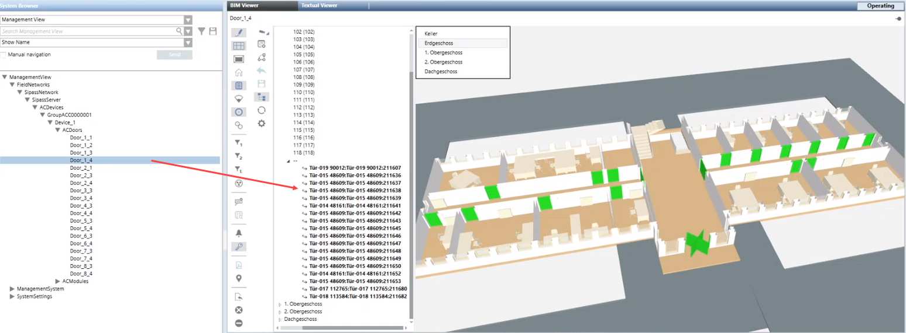

Associate Doors (SiPass Integration)
Scenario: To monitor the door states (SiPass Integration), Desigo CC objects must be manually associated with the BIM object. The association must be entered manually since the naming is generally different between SiPass data and the BIM object.
- You imported the BIM data files.
- You imported a CSV data.
- In the BIM viewer object tree, select …\[Doors] > Object.
- In System Browser, select Management View.
- Select Project > [Network name] > […] > [Devices] > [Group] > [Device] > [Door].
- Drag the door object to the corresponding BIM hierarchy door.

- The Add associations dialog box displays.
NOTE: This settings are not relevant to SiPass.
- Click OK.
- The associations are created and are displayed with symbol and bold face text.
- Click Save
 .
.